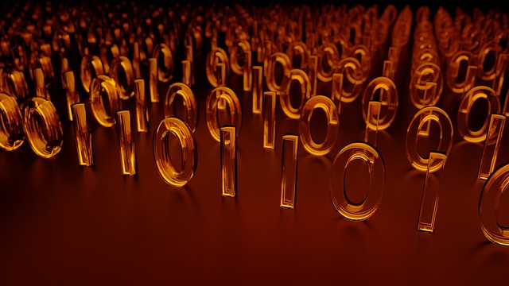
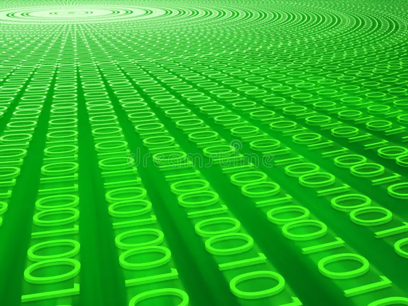
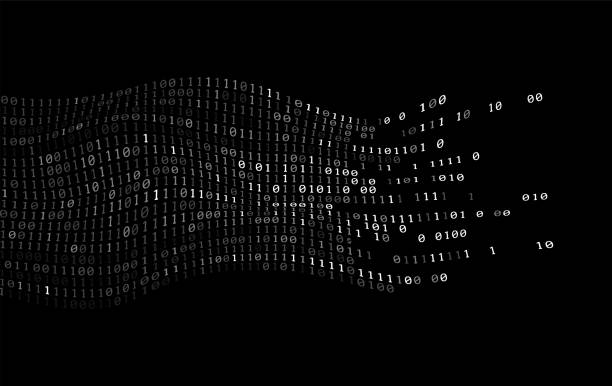
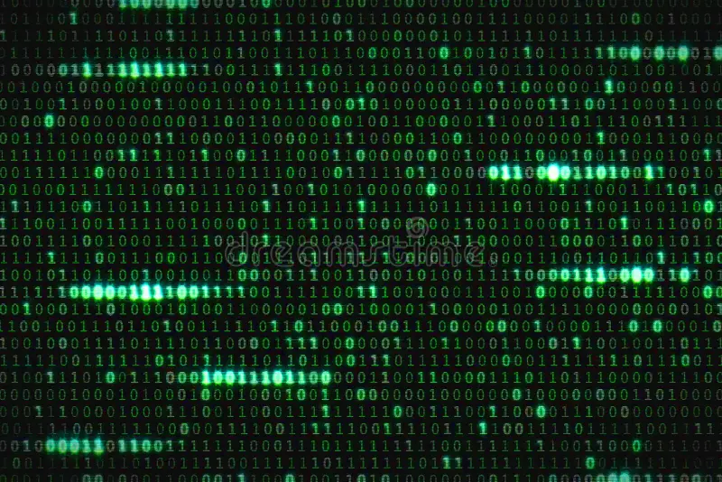
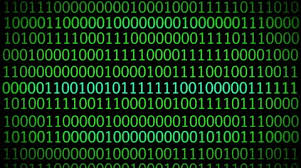

Codul binar este sistemul de reprezentare a informației utilizând doar două simboluri: 0 și 1. Acesta este fundamentul tuturor sistemelor informatice moderne, deoarece calculatoarele procesează datele prin circuite electrice care au doar două stări: pornit și oprit.
Fiecare caracter, imagine sau sunet este convertit în cod binar pentru a fi procesat de calculator.

